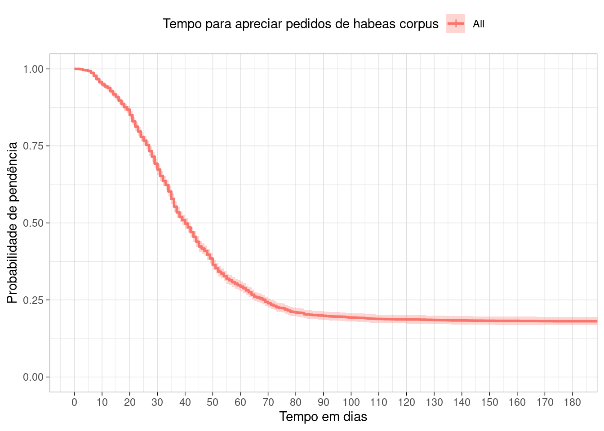
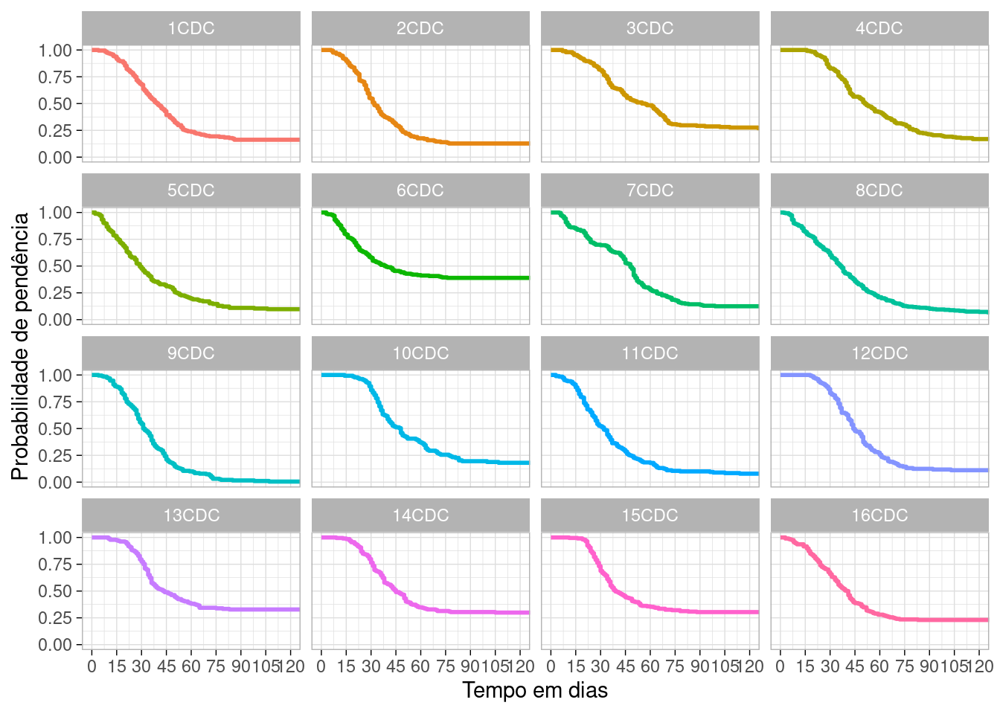
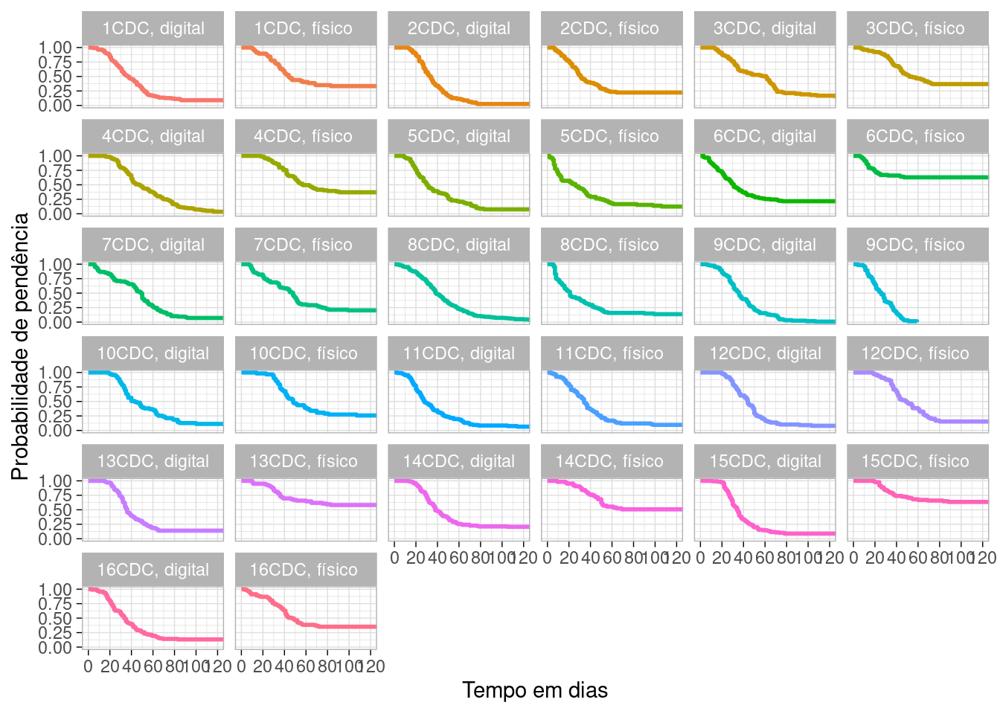

library(tidyverse)
library(JurisMiner)
library(tjsp)Tempo do Habeas Corpus
Nesta análise, mostramos como coletar e estimar o tempo para apreciação de um pedido de habeas corpos no Tribunal de Justiça de São Paulo.
Tempo do Habeas Corpus
Nesta análise, mostramos como coletar e estimar o tempo para apreciação de um habeas corpos no Tribunal de Justiça de São Paulo.
Optamos por baixar pedidos de habeas corpus perante o Tribunal de Justiça de São Paulo contra atos de magistrados de primeira instância. Inicialmente, pensamos em analisar o tempo até a apreciação do pedido de liminar. No entanto, nem todos os HCs têm pedido de antecipação cautelar, muitas decisões concedem HC liminarmente independentemente de haver pedido de antecipação. Muitos HCs, mesmo com pedido de liminar, diferem o processamento até a apreciação de mérito. Dessa forma, optamos por observar o tempo entre a entrada no TJSP até a apreciação do mérito, independentemente se este foi decidido liminarmente ou não.
Para esta análise, baixamos 3174 pedidos de HCs.
Basicamente o que fizemos foi usar a função cnj_sequencial do pacote JurisMiner para criar duas sequências de números do CNJ. Uma que começa com 20, outra que começa com 00. Fizemos isso porque notamos que havia dois padrões de numeração. O primeiro, que começa com 20, corresponde a habeas corpus impetrados eletronicamente, geralmente por advogados, especialmente a Defensoria Pública. O segundo, que começa com 00, corresponde a HCs impetrados pelos próprios pacientes ou seus familiares, geralmente presos com pedidos no âmbito da execução penal.
Coleta dos dados
Adicionei esta seção, somente para documentação do procedimento de coleta. Você pode saltá-la e ir diretamente para a análise. A base utilizada se encontra aqui. Veja abaixo como eu fiz. Primeiramente, criei um diretório chamado cpopsg (Consulta de julgados de segundo grau). Depois criei cada uma das sequências e coloquei para baixar os processos.
Note que, antes de usar essas funções, você tem de instalar os pacotes JurisMiner e tjsp:
remotes::install_github("courtsbr/JurisMiner")
remotes::install_github("jjesusfilho/tjsp")Vamos carregar os pacotes acima e também o tidyverse, pois este é nossa principal ferramenta de ciência de dados.
dir.create("cposg")
seq1 <- cnj_sequencial(inicio = 2000001, ## início da sequência
fim = 2010000, ## fim da sequência
ano = 2023, ## ano do processo
segmento = 8, ## Justiça estadual
uf = 26, ## TJSP
distribuidor = 0000 ## Segunda instância.
)
seq2 <- cnj_sequencial(inicio = 1, ## início da sequência
fim = 10000, ## fim da sequência
ano = 2023, ## ano do processo
segmento = 8, ## Justiça estadual
uf = 26, ## TJSP
distribuidor = 0000 ## Segunda instância.
)
sequencia <- c(seq1, seq2)
tjsp_baixar_cposg(sequencia, diretorio = "cposg")Depois de baixar os htmls com os metadados processuais, a próxima etapa é ler os dados básicos, a movimentação e a decisão. O pacote tjsp possui funções para isso.
arquivos <- list.files("cposg", full. names = TRUE) ## Lista o caminho de cada arquivo
dados <- tjsp_ler_dados_cposg(arquivos) ## importa para o R os dados básicosEsses dados são todos os 20 mil primeiros processos instaurados na segunda instância do TJSP. Eles são, via de regra, ações autônomas. Antes de lermos a movimentação processual, bem como, as decisões, precisamos filtrar para somente aqueles que são habeas corpus criminais.
dados <- dados |>
filter(str_detect(classe, "(?i)habeas")) ## Mantêm somente os habeas corpus.Feito isso, vamos criar uma tabela com os arquivos e, a partir dela, criar uma coluna processo, extrair do nome do arquivo o número do processo para, então, filtrar somente aqueles que são HCs.
tb <- tibble(arquivo = arquivos) |> ## Coloca o vetor de arquivos numa coluna de tibble
mutate(cd_processo = str_extract(arquivo,"(?<=cd_processo_)\\w+")) ## extrai os números dos processos.
tb <- tb |>
semi_join(dados, by = "cd_processo") ## Mantêm os arquivos cujos processos são HCs.Agora podemos ler somente as decisões e movimentações dos processos que são HC.
dispositivos <- tjsp_ler_dispositivo(tb$arquivo)
movimentacao <- tjsp_ler_movimentacao(tb$arquivo)Vamos visualizar a estrutura dos dados.
dados |>
sample_n(10) |>
glimpse()Rows: 10
Columns: 21
$ processo <chr> "20000620620238260000", "20000413020238260000", "20…
$ cd_processo <chr> "RI0079NR30000", "RI0079NQI0000", "RI0079NPG0000", …
$ processo_pg <chr> "70120300220178260050", "15003077420228260561", "15…
$ digital <lgl> TRUE, TRUE, TRUE, TRUE, TRUE, TRUE, TRUE, TRUE, TRU…
$ situacao <chr> "Arquivado administrativamente", "Arquivado adminis…
$ area <chr> "Criminal", "Criminal", "Criminal", "Criminal", "Cr…
$ assunto <chr> "DIREITO PENAL - Crimes Previstos na Legislação Ext…
$ classe <chr> " Habeas Corpus Criminal\n", " Habeas Corpus Crimin…
$ distribuicao <chr> NA, NA, NA, NA, NA, NA, NA, " \n", NA, " \n"
$ orgao_julgador <chr> " 11ª Câmara de Direito Criminal\n", " 1ª Câmara de…
$ origem <chr> "Comarca de São Paulo / São Paulo/DEECRIM UR1 / Uni…
$ outros_numeros <chr> "\n \n …
$ processo_principal <chr> NA, NA, NA, NA, NA, NA, NA, NA, NA, NA
$ recebido_em <chr> NA, NA, NA, NA, NA, NA, NA, NA, NA, NA
$ recurso <chr> NA, NA, NA, NA, NA, NA, NA, NA, NA, NA
$ relator <chr> "XAVIER DE SOUZA", "ANDRADE SAMPAIO", "XISTO ALBARE…
$ revisor <chr> NA, NA, NA, NA, NA, NA, NA, NA, NA, NA
$ secao <chr> " Direito Criminal\n", " Direito Criminal\n", " Dir…
$ ultima_carga <chr> NA, NA, NA, NA, NA, NA, NA, NA, NA, NA
$ valor_da_acao <chr> NA, "1.000,00", "1.000.000,00", "1,00", "0,01", "1.…
$ volume_apenso <chr> "1 / 0", "1 / 0", "1 / 0", "1 / 0", "1 / 0", "1 / 0…Desses dados, nós preservaremos somente o número do processo e o órgão julgador. Além disso, iremos manter somente as câmaras de direito criminal, ajustar sua descrição e convertê-las em fator ordenado.
Igualmente, iremos criar uma nova coluna com a informação de que o processo é originalmente físico, protocolado pelo preso, ou eletrônico desde o início. Para tanto, basta verificar o início do processo. Se começa com 20 é totalmente eletrônico, com 00 é inicialmente físico, ou seja, o pedido foi possivelmente escrito a mão por um pessoa privada de liberdade.
Não iremos usar a informação sobre o crime, mas assim mesmo, vamos reter a informação sobre o crime do assunto. Os casos em que não há informação do crime parecem ser execução penal. Vamos converter esses casos, sem informação sobre o crime, em execução penal.
ordenar_camaras <- function(x){
stringr::str_remove_all(x, "(\\s|[:lower:]+)") %>% factor(.,levels = stringr::str_sort(unique(.),
numeric = T))
}
dados <- dados |>
mutate(crime = str_extract(assunto, "(?<=-)[^-]+$"), .after = assunto) ## extrai tudo que depois do último hífen.
mutate(crime = str_squish(crime)) |> ## remove espaços extra.
mutate(crime = ifelse(assunto == "DIREITO PENAL", "Execução penal", crime)) ## Se houver só a expressão DIREITO PENAL penal no assunto, converte o crime em Execução penal.
select(processo, cd_processo, orgao_julgador, crime) |>
mutate(camara = ordenar_camaras(orgao_julgador)) |>
mutate(fisico = ifelse(str_detect(processo, "^0"), "sim", "não"))A base dispositivos possui quatro colunas, processo, cd_processo, data e dispositivo. Além disso, nem todos os processos contêm a informação da decisão. Na verdade, ao examinar a base é possível saber que houve decisão e é até possível extraí-la da movimentação, mas vamos manter sem essa informação por razões pedagógicas a fim de ilustrar como dados censurados são incorporados na análise.
No código abaixo, usamos a função tjsp_classificar_writ para extrair do dispositivo o teor da decisão. Não usaremos essa informação, mas manteremos na base por sua eventual utilidade. Igualmente, extraímos a informação de que a concessão foi em caráter liminar ou não.
dispositivos <- dispositivos |>
mutate(decisao = tjsp_classificar_writ(dispositivo)) |>
mutate(liminar = case_when(
str_detect(dispositivo,"(?i)\\blimin") ~ "sim",
TRUE ~ "não"
))Vamos extrair da movimentação a primeira movimentação de cada processo, que pode ser interpretada como a distribuição do HC.
distribuicao <- movimentacao |>
group_by(processo) |>
filter(data== min(data)) |>
slice(1) |>
select(processo, data_distribuicao = data)Por fim, vamos juntar essas três bases e criar uma nova coluna chamada duração, que é a diferença entre a data da distribuição e a data da decisão. O pacote tjsp tem uma função chamada lapso, que serve para isso. Iremos colocar a duração em dias porque a movimentação não informa a hora. Iremos também adicionar uma coluna informando o status da informação, se foi censurada terá valor 0, se não, valor 1.
base <- dispositivos |>
select(processo, liminar, data_decisao = data, decisao) |>
inner_join(dados, by = "cd_processo") |>
inner_join(mov, by = "cd_processo") |>
mutate(duracao = lapso(inicio = data_distribuicao,
fim = data_decisao,
unidade = "dia")
) |>
mutate(status = ifelse(is.na(duracao),0, 1))Por fim, vamos ordenar as colunas e converter as variáveis independentes em fatores
base <- base |>
select(processo, duracao, status, data_distribuicao, data_decisao, status, camara,crime, liminar, fisico, decisao) |>
mutate(across(crime:decisao, as.factor))Análise
Estamos em condições de aplicar a análise de duração. Antes, porém, vamos visualizar os dados. São 3174 pedidos julgados. No entanto, há 587 casos censurados porque “não sabemos” quando foram decididos. Sabemos, porém que foram julgados porque todos foram extintos.
glimpse(base)Rows: 3,174
Columns: 10
$ processo <chr> "00100009320228260000", "00099948620228260000", "000…
$ duracao <dbl> 28, 30, 30, 1000, 44, 9, 65, 20, 14, 61, 72, 40, 6, …
$ status <dbl> 1, 1, 1, 0, 1, 1, 1, 1, 1, 1, 1, 1, 1, 1, 1, 1, 1, 0…
$ data_distribuicao <date> 2022-03-30, 2022-03-30, 2022-03-30, 2022-03-30, 202…
$ data_decisao <date> 2022-04-27, 2022-04-29, 2022-04-29, NA, 2022-05-13,…
$ camara <fct> 15CDC, 10CDC, 13CDC, 14CDC, 2CDC, 7CDC, 12CDC, 9CDC,…
$ crime <fct> "Furto Qualificado", "Receptação Qualificada", "Exec…
$ liminar <fct> não, não, não, não, não, não, não, não, sim, não, nã…
$ formato <fct> físico, físico, físico, físico, físico, físico, físi…
$ decisao <fct> prejudicado/extinto, denegado, não conhecido, NA, nã…Para a análise, iremos usar dois pacotes, o survival que já vem instalado com o R e survminer, que serve para gerar gráficos usando o ggplot2.
Instale o surviminer:
install.packages("survminer")Carregue os dois pacotes:
library(survival)
library(survminer)Do pacote survival, usaremos duas funções, Surv e survfit. A primeira cria um objeto “survival” com informações sobre o tempo, o status e o tipo de censura. A segunda roda o modelo Kaplan-Meier com seus respectivos estimadores.
Inicialmente, vamos rodar o modelo sem as variáveis categóricas. Note que eu crio, com a função Surv o objeto. Nela eu coloquei o tempo (duração) e o status. Além disso, está subentendido o tipo de censura, que é à direita.
km_fit <- survfit(Surv(duracao, status) ~ 1, data = base)Os resultados mostram que de 3.174 pedidos, tivemos 2.604 decisões conhecidas. As demais foram censuradas. A mediana é de 40 dias. A mediana é mais apropriada que a média em análise de duração porque a distribuição das decisões é mais concentrada nos primeiros momentos, com poucos casos, mas importantes, com alta duração.
km_fitCall: survfit(formula = Surv(duracao, status) ~ 1, data = base)
n events median 0.95LCL 0.95UCL
[1,] 3174 2604 40 39 42Para visualizar os resultados em mais detalhes, vamos usar a função surv_summary do pacote survminer. Vamos também renomear as colunas para nomes mais amigáveis em termos de compreensão.
Mostraremos somente as 15 primeiras linhas e as 11 últimas para caber na página.
sumario <- surv_summary(km_fit) |>
setNames(c("tempo_em_dias","pedidos_pendentes","pedidos_decididos",
"n_censurados","prob_duracao","erro","ic_inferior","ic_superior")) |>
slice(c(1:15, 120:130))
sumario| tempo_em_dias | pedidos_pendentes | pedidos_decididos | n_censurados | prob_duracao | erro | ic_inferior | ic_superior |
|---|---|---|---|---|---|---|---|
| 2 | 3174 | 3 | 0 | 0.9990548 | 0.0005460 | 1.0000000 | 0.9979863 |
| 3 | 3171 | 8 | 0 | 0.9965343 | 0.0010468 | 0.9985809 | 0.9944920 |
| 4 | 3163 | 4 | 0 | 0.9952741 | 0.0012231 | 0.9976629 | 0.9928910 |
| 5 | 3159 | 8 | 0 | 0.9927536 | 0.0015165 | 0.9957087 | 0.9898073 |
| 6 | 3151 | 18 | 0 | 0.9870825 | 0.0020305 | 0.9910187 | 0.9831620 |
| 7 | 3133 | 31 | 0 | 0.9773157 | 0.0027042 | 0.9825094 | 0.9721495 |
| 8 | 3102 | 34 | 0 | 0.9666037 | 0.0032993 | 0.9728745 | 0.9603733 |
| 9 | 3068 | 31 | 0 | 0.9568368 | 0.0037699 | 0.9639330 | 0.9497928 |
| 10 | 3037 | 23 | 0 | 0.9495904 | 0.0040896 | 0.9572325 | 0.9420094 |
| 11 | 3014 | 22 | 0 | 0.9426591 | 0.0043778 | 0.9507821 | 0.9346055 |
| 12 | 2992 | 14 | 0 | 0.9382483 | 0.0045537 | 0.9466597 | 0.9299116 |
| 13 | 2978 | 35 | 0 | 0.9272212 | 0.0049729 | 0.9363027 | 0.9182278 |
| 14 | 2943 | 32 | 0 | 0.9171393 | 0.0053352 | 0.9267800 | 0.9075988 |
| 15 | 2911 | 26 | 0 | 0.9089477 | 0.0056179 | 0.9190113 | 0.8989943 |
| 16 | 2885 | 38 | 0 | 0.8969754 | 0.0060156 | 0.9076136 | 0.8864619 |
| 144 | 581 | 1 | 0 | 0.1827347 | 0.0375377 | 0.1966859 | 0.1697731 |
| 148 | 580 | 1 | 0 | 0.1824197 | 0.0375773 | 0.1963620 | 0.1694672 |
| 152 | 579 | 1 | 0 | 0.1821046 | 0.0376171 | 0.1960382 | 0.1691614 |
| 161 | 578 | 1 | 0 | 0.1817895 | 0.0376569 | 0.1957143 | 0.1688555 |
| 167 | 577 | 1 | 0 | 0.1814745 | 0.0376968 | 0.1953904 | 0.1685497 |
| 168 | 576 | 1 | 0 | 0.1811594 | 0.0377369 | 0.1950665 | 0.1682439 |
| 173 | 575 | 1 | 0 | 0.1808444 | 0.0377770 | 0.1947425 | 0.1679381 |
| 190 | 574 | 1 | 0 | 0.1805293 | 0.0378172 | 0.1944186 | 0.1676323 |
| 227 | 573 | 1 | 0 | 0.1802142 | 0.0378575 | 0.1940946 | 0.1673265 |
| 234 | 572 | 1 | 0 | 0.1798992 | 0.0378979 | 0.1937706 | 0.1670207 |
| 237 | 571 | 1 | 0 | 0.1795841 | 0.0379385 | 0.1934466 | 0.1667150 |
Veja que o primeiro tempo é dois dias, ou seja, depois de dois dias, havia 3174 casos, sendo que três casos foram julgados. Depois de três dias, oito casos foram julgados. A tabela também mostra o número de pedidos pendentes depois de um certo número de dias. Também mostra a probabilidade de pendência, ou seja, a probabilidade de o pedido não ter sido apreciado a cada momento.
A curva de Kaplan-Meier é ilustrativa, veja abaixo. Limitamos no gráfico para 180 dias e colocamos intervalos de dez dias para facilitar a visualização.
ggsurvplot(km_fit,
xlim = c(0,180),
break.time.by = 10,
ylab = "Probabilidade de pendência",
xlab = "Tempo em dias",
legend.title = "Tempo para apreciar pedidos de habeas corpus",
ggtheme = theme_light()
)
Veja que a curva mostra a probabilidade de pendência ou duração ao longo do tempo. Isto é, no tempo zero, 100% está pendente. Conforme o tempo passa, a taxa de pendência vai caindo.
Duração por câmara
Vamos agora observar como ficam os tempos quando condicionamos por câmara de direito criminal.
km_fit <- survfit(Surv(duracao, status) ~ camara, data = base)Você pode visualizar os resultados com surv_summary(km_fit). Aqui iremos apenas gerar os gráficos das curvas de Kaplan-Meier para cada câmara de direito criminal.
curva <- ggsurvplot(km_fit,
data = base,
break.time.by = 15 ,
xlim = c(0,120),
ylab = "Probabilidade de pendência",
xlab = "Tempo em dias",
ggtheme = theme_light()
)
ajusta_etiqueta <- function(x) stringr::str_remove(x, "camara=")
curva$plot +
facet_wrap(~strata, labeller = as_labeller(ajusta_etiqueta)) +
theme(legend.position="none")
As curvas sugerem diferenças entre as câmaras criminais. Algumas, como a quinta e a oitava câmaras decidem um número relevante de casos logo nos primeiros dias. Por su vez, a 10ª e a 15ª demoram um pouco mais, mas suas curvas mostram uma redução relevante de casos depois de um certo período.
Teste Logrank
Para saber se essas curvas são realmente diferentes, há um teste chamado logrank. Por meio dele, verifica-se de os grupos (câmaras de direito criminal) experimentam diferenças nas curvas, i.e., dado um momento, e.g., 5 dias após o pedido, o número de decisões é o mesmo para cada um, ou difere significativamente. Basicamente o teste compara o número de decisões observadas e o número de decisões esperadas para cada momento e apresenta a soma deles. O teste logrank adotado pelo R é uma aproximação ao teste do Chi Quadrado. Se você não tem familiaridade com o teste do Chi Quadrado, esse vídeo pode lhe ajudar.
Para realizar o teste, há uma função específica:
surv_diff <- survdiff(Surv(duracao, status) ~ camara, data = base)
surv_diffCall:
survdiff(formula = Surv(duracao, status) ~ camara, data = base)
N Observed Expected (O-E)^2/E (O-E)^2/V
camara=1CDC 191 162 149.2 1.09465 1.18900
camara=2CDC 165 144 106.4 13.26440 14.16525
camara=3CDC 192 142 196.8 15.26736 16.93715
camara=4CDC 225 187 231.1 8.40432 9.45539
camara=5CDC 164 149 98.6 25.74522 27.39508
camara=6CDC 231 142 200.6 17.11896 19.10198
camara=7CDC 216 191 183.1 0.34045 0.37579
camara=8CDC 306 290 210.2 30.26589 33.76487
camara=9CDC 190 190 105.4 67.79794 72.79231
camara=10CDC 133 110 128.7 2.71341 2.92378
camara=11CDC 190 176 115.6 31.59349 33.88838
camara=12CDC 153 138 137.6 0.00136 0.00148
camara=13CDC 186 126 178.6 15.48205 17.02984
camara=14CDC 204 143 194.1 13.45849 14.89480
camara=15CDC 224 157 204.1 10.86918 12.08055
camara=16CDC 204 157 163.8 0.28635 0.31276
Chisq= 264 on 15 degrees of freedom, p= <2e-16 Como se pode observar dos resultados, há diferenças significativas entre as câmaras, p-valor < 0.05. Algumas decidiram mais hebeas corpus do que o esperado a cada momento, outras ficaram aquém do esperado.
Duração com múltiplas variáveis.
Vamos agora incluir o formato entre as variáveis condicionantes do tempo para julgar um HC e ver os resultados grafivamente.
km_fit <- survfit(Surv(duracao, status) ~ camara + formato, data = base)
curva <- ggsurvplot(km_fit,
data = base,
break.time.by = 20 ,
xlim = c(0,120),
ylab = "Probabilidade de pendência",
xlab = "Tempo em dias",
ggtheme = theme_light()
)
remove_nome <- function(x) stringr::str_remove_all(x, "\\w+=")
curva$plot +
facet_wrap(~strata, labeller = as_labeller(remove_nome))+
theme(legend.position="none")
Quando olhamos para algumas câmaras, como a 13ª e a 15ª, os processos eletrônicos são julgados muito mais rapidamente e, pior, a maioria dos pedidos físicos nem sequer foram julgados no tempo de 120 dias mostrado no gráfico.
Indo além
Esse tutorial quis ilustrar o potencial da análise de duração para a jurimetria. Nem sequer exploramos o tema profundamente. Há muito mais questões que podem ser exploradas, como saber se decisões quem tendem a negar o HC saem mais rapidamente ou não. Igualmente, decisões liminares estão sujeitas ao fumus boni iuris e ao periculum in mora. Possivelmente, os tempos se invertem quando deferir uma liminar supostamente gera um perigo (HC) ou quando a o indeferimento gera perigo (medidas protetivas.)
A base está disponível para você analisá-la e explorar esses outros aspectos.